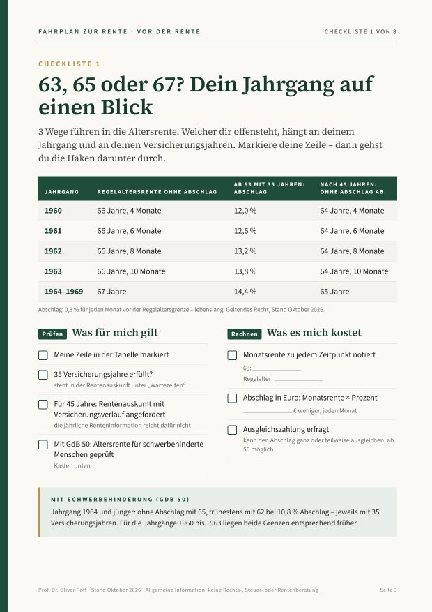
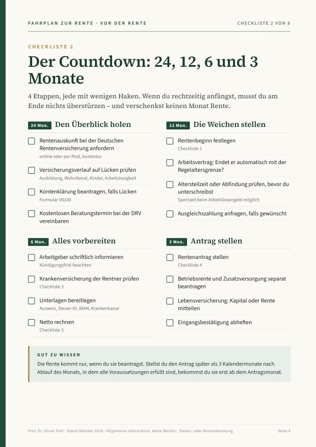
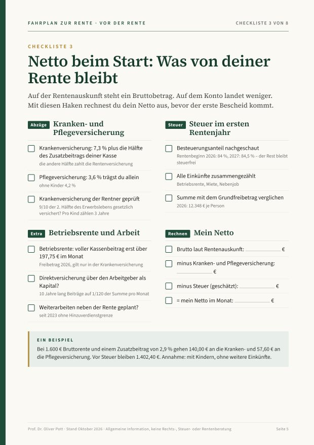
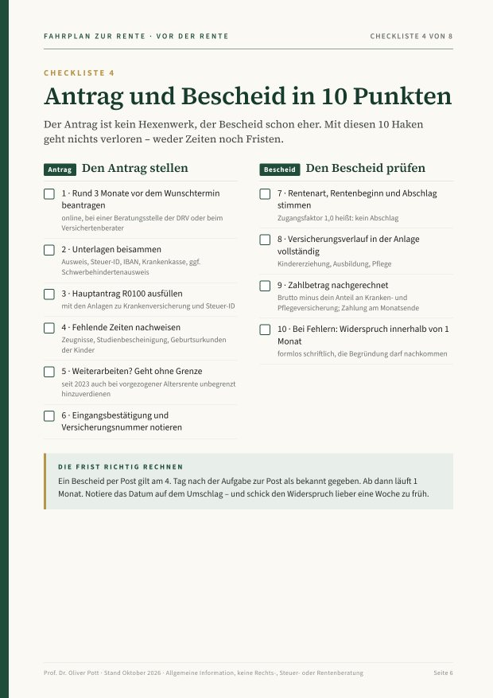

Vor der Rente
Prof. Dr. Oliver Pott
Fahrplan zur Rente
Für alle, die noch arbeiten: Wann gehst du – und was ist bis dahin zu tun?
- 63, 65 oder 67? Dein Jahrgang auf einen BlickTabelle für die Jahrgänge 1960 bis 1969
- Der Countdown: 24, 12, 6 und 3 Monatewas wann zu erledigen ist
- Netto beim Startwas von deiner Rente wirklich bleibt
- Antrag und Bescheid in 10 Punktenohne Lücken, ohne Fristversäumnis



